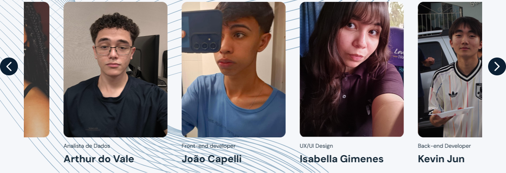
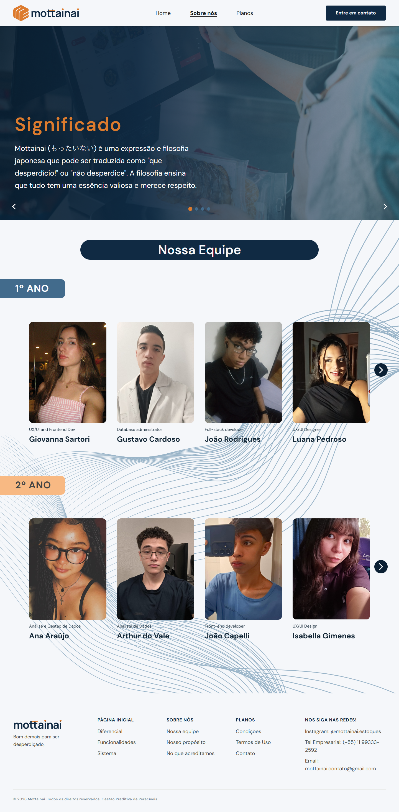
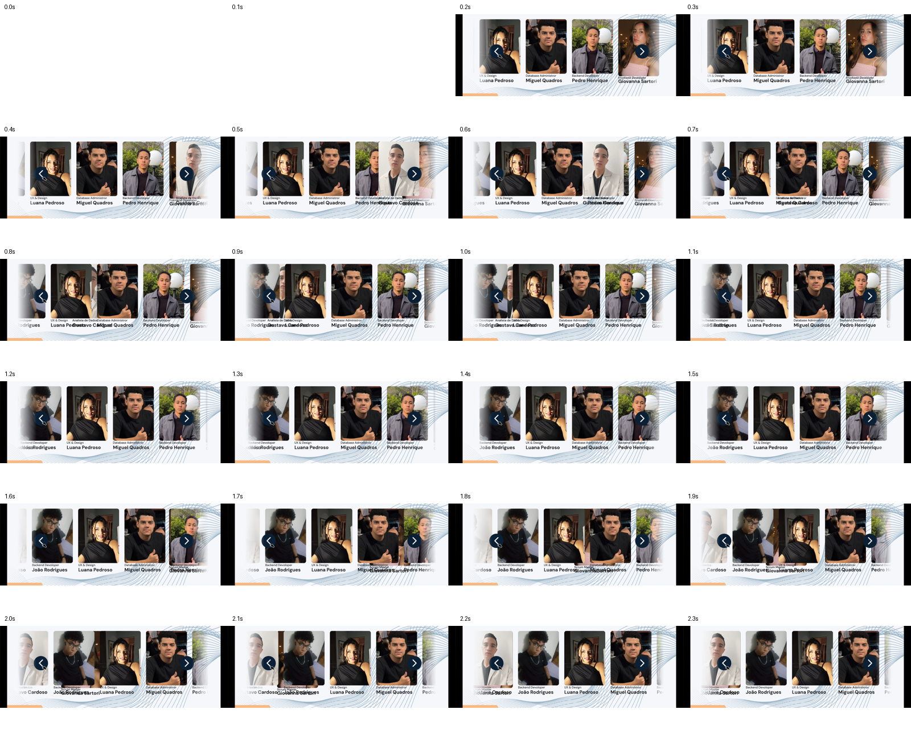
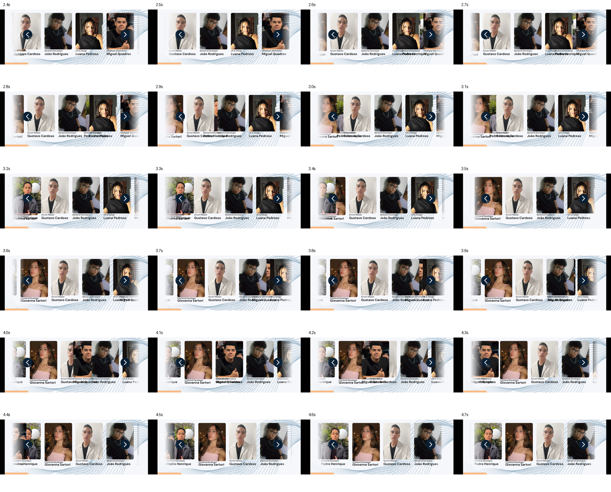
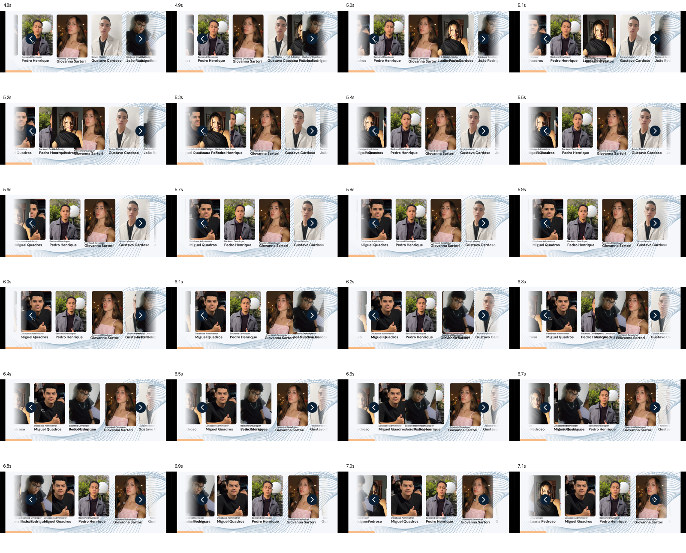
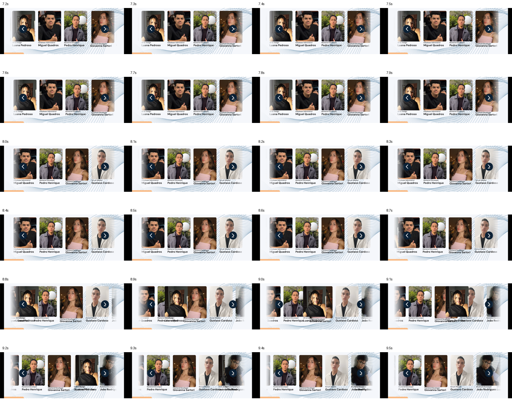
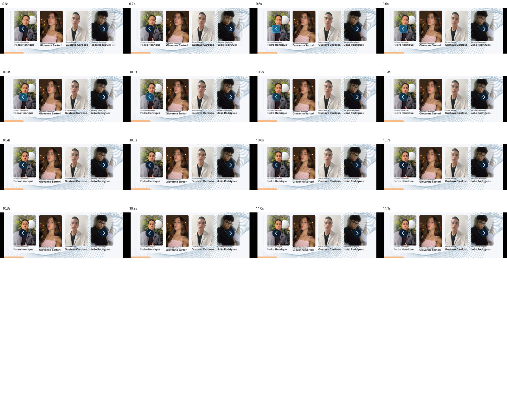

Rodada 16 — track horizontal real
Relatório e arquivos · Abrir a equipe · Home · Planos · FAQ
1º ano — avanço e retorno da implementação
2º ano — avanço e retorno da implementação
Durante a transição — 1º ano
Durante a transição — 2º ano

Home — marca e margens
Sobre Nós — mesma identidade

Inspeção do vídeo de referência completo
112 amostras de 0,1s cobrindo o anexo de 11,1333s. As sobreposições defeituosas da referência não foram reproduzidas.




